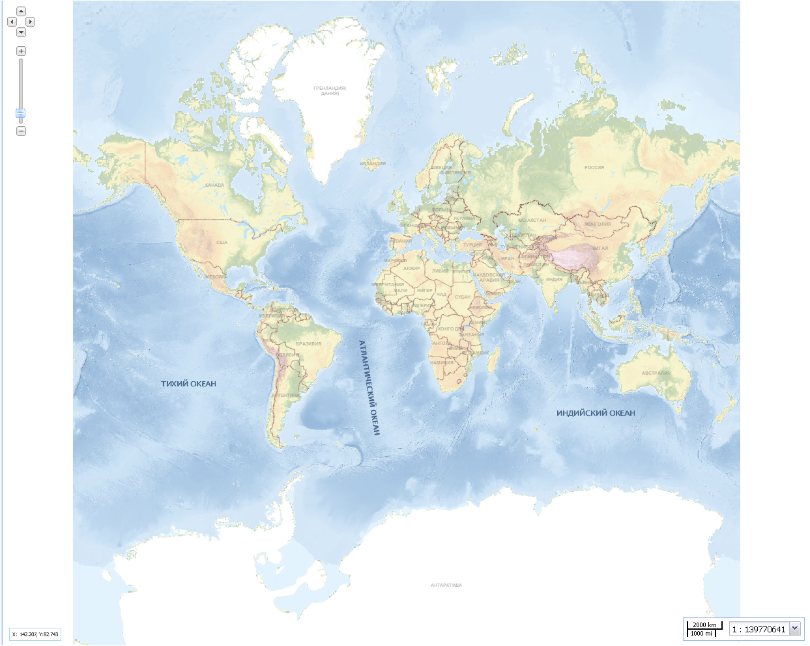

Рабочее окно карты
Рабочее окно карты служит для отображения выбранной картоосновы и необходимых тематических слоев. По умолчанию при загрузке приложения отображается специализированная картографическая основа ЭКО 3.1.

В левом верхнем углу рабочего окна расположен универсальный инструмент для перемещения вверх-вниз и влево-вправо видимой области карты, а также для пропорционального увеличения или уменьшения масштаба отображения.
Перемещение карты осуществляется нажатием на соответствующие кнопки: ,,,, изменение масштаба – на кнопки  и .
и .
Менять масштаб отображения проекта можно также с помощью панели регулирования масштаба.
При работе в рабочем окне карты используются стандартные дополнительные возможности панорамирования колесом мыши: прокрутка от себя – приближение к объекту, на себя – отдаление от объекта. Перемещение проекта по рабочему окну в режиме панорамирования осуществляется с нажатой левой кнопкой мыши.
В левом нижнем углу рабочего окна карты находится панель координат курсора, в правом нижнем – панель отображения и регулирования масштаба.